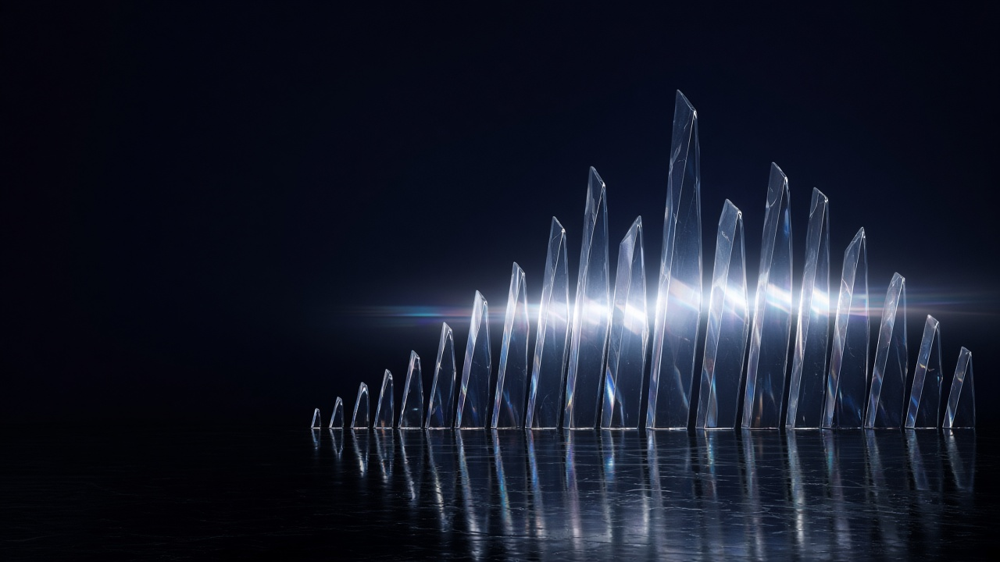

開発中
Zion DAW
AIと一緒に作っている、音楽制作ソフトです。AIが曲をボーカル・ドラム・ベース・その他に分ける「ステム分離」も入っています。「こんなのが欲しい」を伝えては試して、直して、を繰り返して開発中です。
光の断面
現場と、コードと、音楽を。
プログラムは素人です。AIにハマって、触って、試して、直して——気づいたら、こんなものまで作れるようになっていました。

About
Webサイトの運用・制作ディレクションに約10年、機械設計に5年（製造ラインの立ち上げと3D CADによる治具設計）。現場の仕事と「作ること」の両方を渡ってきた経験を土台に、現在はトラックドライバーとして働きながら、AIに出会い、趣味として音楽ソフトウェアとWebアプリを個人開発しています。
ちなみに、コードはほとんど書けません。書いているのはAIです。私の役目は「こんなのが欲しい」を伝えて、試して、「なんか違う」と言って、また試すこと。AIの楽しさにハマって触り続けていたら、DAWも業務アプリも形になっていました。
自社Webサイトの運用担当。サイト更新・変更時の制作会社との折衝、新店舗オープン時のホームページ立ち上げ（制作は外注し、ディレクションを担当）、更新に伴う画像編集・バナー制作。
機械設計。電機メーカーへ派遣。スマートフォン・ディスプレイの製造ライン立ち上げに参加し、ラインで使用する治具を3D CADで設計。
トラックドライバー。本業の傍ら、Zion DAWやAI切り抜きツールなどを個人開発。
Works
ぜんぶ、AIと一緒に作ったもの。素人が本気でハマると、ここまで来ます。
AIと一緒に作っている、音楽制作ソフトです。AIが曲をボーカル・ドラム・ベース・その他に分ける「ステム分離」も入っています。「こんなのが欲しい」を伝えては試して、直して、を繰り返して開発中です。
AIと一緒に作っている、動画の切り抜きツールです。長い動画の見どころをAIが選んで縦型クリップに切り抜き、字幕と、Xに投稿する文まで作ります。いまは「お試しサービス」として運用中です。
Contact
エンジニアではないので、ふつうの開発のご依頼は受けられません。でも「AIをガンガン使っていい」が前提なら、仕事の相談も受けます。「こんなものが欲しい」を、一緒に形にしましょう。制作のこと、音楽のこともお気軽にどうぞ。
メールを送る info@n-toku.com